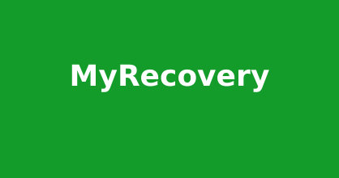

NextSteps
So you've decided to seek treatment enter early recovery...congratulations, but now what?! You have now have a
handle on your sobriety, but what about all the other areas of your life that were negatively impacted? Enter
NextSteps.
NextSteps is a hub for those in recovery that are seeking to increase their support network and take a holistic
approach towards getting stable and rounding out your healing.
Features
- See your total sober time in days, hours and minutes
- Allow you to add and remove your favorite providers
- Set goals for yourself and track their due dates
- Link an image of yourself and state your motto
- Search any provider's entire profile for key words
Squeaker
Squeaker Pets is a fully-responsive social media application for your pets. It is hosted on Heroku and is a full
CRUD application. Feel free to peruse other profiles and react to their posts.
Features
- Account creation and login with a unique username.
- Profile customization including profile photo uploads hosted by Cloudinary.
- Create posts using a rich text editor allowing different media types such as images and videos along with
text formatting.
- React to posts from within the Squeaker community using a set of emojis that express your pet's feelings
and thoughts based on our opinion.

BuyBonsai
BuyBonsai is an ecommerce site geared towards ease-of-use and finding that perfect tree! Peruse, add, remove,
learn etc. This project is hosted on Surge.
Features
- Search for a bonsai via category or price
- Populate and manipulate your category. See your total change in real-time.
- See your most recently viewed items

$5 Bookstore
The $5 Bookstore is an early project of demonstrating a basic React CRUD app. Simply browse, add or delete books as your see fit. Enjoy!
Features
- Search the book database via search bar
- Add any book you would like
- Edit any current book
- Add/Remove books from your cart
- Delete any book from the database
MyRecovery
MyRecovery is a tool that allows those in recovery from chemical dependency to not only take pride in the time
that they have achieved...but also set goals and keep themselves on track to accomplish them. What is the best
way to welch on a personal promise? Tell nobody about it. That is where MyRecovery comes in. This project is
hosted on Surge.
Features
- Sign in to receive a personal greeting
- Calculate your accrued sober time in days, hours and even minutes!
- Set a goal and enter the contact information for whom you want to keep you accountable. See the remaining
time left on your goal via the progress bars.
- A library of links to outside resources that can assist in keeping on your path to recovery
- Your goal will remain even when you leave the page and return! Enjoy!
